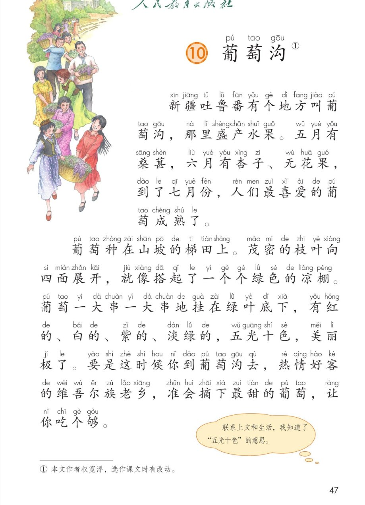
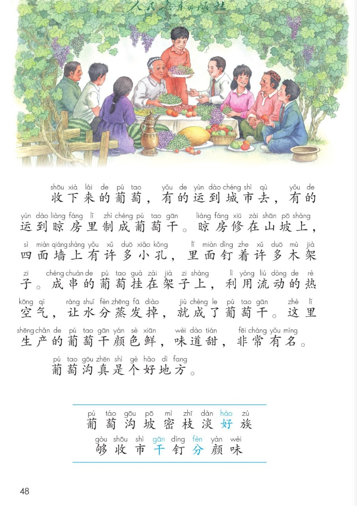
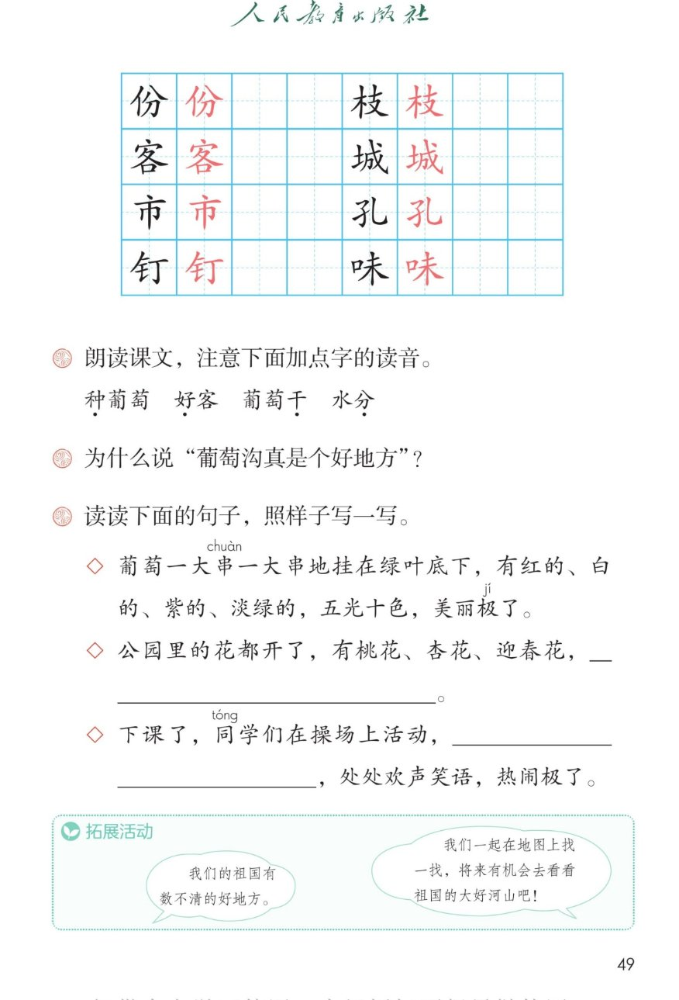

×
🔊 手机听不到声音怎么办？照这 3 步做
① 用
Edge 浏览器打开
www.jeepsh.cn（在微信里打开的点右上角「⋯ → 在浏览器打开」；没装 Edge 就到应用商店搜「Edge」安装）。
② 应用商店搜
「讯飞语记」安装 → 打开它 →
通用设置 → 语音合成设置 → 打开
「合成系统接口」和
「全局生效」两个开关 → 再选一个
中文发音人。
③ 系统语言设为
简体中文，点「
播放」试听能说中文后，
彻底关闭浏览器再重开（后台划掉），回到课件点读就有声音。
→ 打开声音自检
🍇 第 10 课《葡萄沟》· 有声图文带读
统编版语文 · 第四单元·阅读 · 课本 P47~49
课文 4 个自然段
会认字 17
会写字 8
听写词 10
近义词 4 组
深入理解 8 题
本课本领 按顺序介绍一个地方
🎧 五步学（可随时点任意一句、一个字、一个词单独听）：
① 听读课文——一句一句读，读到哪一句哪一句发光；开「跟读」后读完一句留时间让你自己读。
② 学字词——17 个会认字、8 个会写字（含书写提示），点一个读一个。
③ 词语·听写·造句——听写 10 个词（读两遍→你写→报答案→听示范句），再听 4 组近义词辨析。
④ 深入理解——8 道题（认知 / 理解 / 运用 / 拓展），开放题答案不唯一，先想后看。
⑤ 介绍葡萄沟·分角色——当小导游按顺序介绍葡萄沟，再分角色朗读课文。
① 听读课文（点哪一句，读哪一句）点段前的 ①②③④ 听整段
注音只标本课要认、要写的字，读音来自课本第 3 页生字表
🎤 朗读要求（老师标准）
① 读准字音，不添字、不漏字、不回读；
② 这是介绍一个地方的课文，读得像带人参观，语气亲切；
③ “有红的、白的、紫的、淡绿的”几个短语之间稍停，一样一样数清楚；
④ “五光十色”“美丽极了”“吃个够”读出喜爱的语气；
⑤ 最后一句“葡萄沟真是个好地方”读得肯定、有感情。
①新疆吐鲁番有个地方叫葡萄沟，那里盛产水果。五月有桑葚，六月有杏子、无花果，到了七月份，人们最喜爱的葡萄成熟了。
②葡萄种在山坡的梯田上。茂密的枝叶向四面展开，就像搭起了一个个绿色的凉棚。葡萄一大串一大串地挂在绿叶底下，有红的、白的、紫的、淡绿的，五光十色，美丽极了。要是这时候你到葡萄沟去，热情好客的维吾尔族老乡，准会摘下最甜的葡萄，让你吃个够。
③收下来的葡萄，有的运到城市去，有的运到晾房里制成葡萄干。晾房修在山坡上，四面墙上有许多小孔，里面钉着许多木架子。成串的葡萄挂在架子上，利用流动的热空气，让水分蒸发掉，就成了葡萄干。这里生产的葡萄干颜色鲜，味道甜，非常有名。
④葡萄沟真是个好地方。
🤔 想一想（点我可跳过）
课本的样子（点一张图，听读这一页）点一张图，听读整页

第 1 张 · 葡萄熟了

第 2 张 · 晾房与生字表

第 3 张 · 田字格与课后题
📖 人教版《语文》二年级上册 · 课本第 47~49 页 · 图片仅供个人学习，版权归人民教育出版社所有
② 会认字（17 个）点一个字，听读音、词语和课文里的句子
② 会写字（8 个）结构、部首、笔画与书写提示为通用规范，供参考，以教材和老师的指导为准
份
fèn
月份 · 一份
6 画 · 左右（亻）
左窄右宽，捺要平
枝
zhī
枝叶 · 树枝
8 画 · 左右（木）
木旁捺变点
客
kè
好客 · 客人
9 画 · 上下（宀）
宝盖要宽，撇捺舒展
城
chéng
城市 · 城门
9 画 · 左右（土）
斜钩要长有力
市
shì
城市 · 市场
5 画 · 独体
横要长，竖在中线
孔
kǒng
小孔 · 孔雀
4 画 · 左右（子）
子旁横变提，钩圆润
钉
dīng
钉子 · 钉着
7 画 · 左右（钅）
金旁窄，竖钩要直
味
wèi
味道 · 香味
8 画 · 左右（口）
口要小偏上，下横长
③ 课后第 1 题·读准加点字（多音字）点一行，听读这一组词语或句子
音种葡萄 好客 葡萄干 水分
四五光十色 热情好客
词茂密 淡绿 流动 蒸发
③ 听写（10 个词）读两遍 → 你在纸上写 → 报答案 → 听示范句
准备听写 · 共 10 个词
○ ○ ○
点下面的「开始听写」，听到一个词就写一个词。
③ 听写的词 · 造句示范点词听读，点句子听示范句，再自己说一句
1葡萄课文词语
示范句：新疆吐鲁番有个地方叫葡萄沟。
✏️ 我也能说：什么样的葡萄 + 怎么样
2山坡课文词语
示范句：葡萄种在山坡的梯田上。
✏️ 我也能说：山坡上 + 有什么
3茂密课文词语
示范句：茂密的枝叶向四面展开。
✏️ 我也能说：什么 + 很茂密
4枝叶课文词语
示范句：茂密的枝叶像一个个绿色的凉棚。
✏️ 我也能说：什么的枝叶 + 怎么样
5城市会写字
示范句：有的葡萄运到城市去。
✏️ 我也能说：什么样的城市
6好客课文词语
示范句：维吾尔族老乡热情好客。
✏️ 我也能说：谁 + 热情好客
7水分课文词语
示范句：晾房利用热空气，让葡萄的水分蒸发掉。
✏️ 我也能说：什么里 + 有很多水分
8葡萄干课文词语
示范句：这里生产的葡萄干颜色鲜，味道甜。
✏️ 我也能说：什么样的葡萄干 + 怎么样
9颜色会写字
示范句：这里的葡萄干颜色鲜，非常好看。
✏️ 我也能说：什么 + 是什么颜色
10味道会写字
示范句：葡萄的味道真甜。
✏️ 我也能说：什么的味道 + 怎么样
③ 近义词辨析（4 组）相同点 / 不一样在哪 / 各造一句
茂密 — 茂盛
相同：都表示草木长得多、长得好。
不一样：茂密是说枝叶长得密，一片挨着一片，不透风；茂盛是说长得旺盛，很有精神。
茂密：森林里树木茂密。
茂盛：春天到了，小草长得很茂盛。
五光十色 — 五颜六色
相同：都表示颜色很多。
不一样：五光十色还多一层亮闪闪、很鲜亮的意思；五颜六色只说颜色多。
五光十色：节日的彩灯五光十色。
五颜六色：花园里的花开得五颜六色。
热情 — 热心
相同：都是说对人有感情、愿意帮人。
不一样：热情是待人亲热、大方；热心是肯出力，愿意帮别人做事。
热情：维吾尔族老乡热情地招待客人。
热心：小明是个热心的孩子，常帮同学。
喜爱 — 喜欢
相同：都是对人或事物有好感。
不一样：喜爱感情更深一点，写文章常用；喜欢说起来更随便，平时说话常用。
喜爱：人们最喜爱葡萄沟的葡萄。
喜欢：我喜欢吃葡萄干。
③ 词语拓展（说一说，记一记）
数量词一大串一大串 一个个 许多小孔 许多木架子
颜色词红的 白的 紫的 淡绿的
写样子茂密的枝叶 绿色的凉棚 成串的葡萄 流动的热空气
夸一夸五光十色 美丽极了 颜色鲜 味道甜
④ 深入理解（8 题 · 先想后看）标「答案不唯一」的题，说得有道理都对
认知“种葡萄、好客、葡萄干、水分”这四个词里加点的字，该怎么读？
看解析
🤔 想一想
解析（课后第 1 题）：
种 读第四声（zhòng），不是“种子”的 zhǒng；好 读第四声（hào），不是“好人”的 hǎo。
干 读第一声（gān），不是“干活”的 gàn；分 读第四声（fèn），不是“分开”的 fēn。
💡 多音字读哪个音，要看它在这个词里是什么意思
认知葡萄沟在什么地方？那里五月、六月、七月分别有什么？
看解析
🤔 想一想
解析：
地点：新疆吐鲁番。
五月桑葚 → 六月杏子、无花果 → 七月葡萄成熟了。
💡 按月份一样一样数过来，就记住了
理解“茂密的枝叶向四面展开，就像搭起了一个个绿色的凉棚。”这里的“凉棚”指的是什么？
看解析
🤔 想一想
解析：
凉棚就是葡萄架：葡萄藤爬在架子上，枝叶长满了。
为什么像凉棚：枝叶密、向四面展开、能遮住太阳，人在下面很凉快。
🌈 作者把葡萄架比作凉棚，一读就能想出那个样子
理解“五光十色”是什么意思？从这个词能看出葡萄有什么特点？
看解析
🤔 想一想
解析（看课本旁批）：
先看上文：有红的、白的、紫的、淡绿的 → 颜色多。
再看意思：五光十色比“五颜六色”还多一层亮闪闪的意思。
💡 遇到不懂的词，往前读一读上文，意思就出来了——这就是联系上文猜词
理解为什么说“葡萄沟真是个好地方”？
看解析
🤔 想一想
解析（课后第 2 题，说出两三条就很好）：
水果多：桑葚、杏子、无花果、葡萄，一年到头有果子。
葡萄美：一大串一大串，五光十色，美丽极了。
人好客：准会摘下最甜的葡萄，让你吃个够。
🌈 还有一条别忘了：葡萄干颜色鲜、味道甜，非常有名
运用照样子写一写：① 葡萄一大串一大串地挂在绿叶底下，有红的、白的、紫的、淡绿的，五光十色，美丽极了。② 公园里的花都开了，有桃花、杏花、迎春花，＿＿＿。③ 下课了，同学们在操场上活动，＿＿＿，处处欢声笑语，热闹极了。
看解析
🤔 想一想
参考答案（课后第 3 题）：
第 ② 句：先说“有……有……有……”，再用一个词夸一夸 → 五颜六色，美丽极了。
第 ③ 句：先写“有的……有的……有的……”，再接“处处……，……极了”。
💡 照样子写句子，先看清样子分几段，再照样换内容
🌈 答案不唯一，样子对了、句子通顺就很好
运用用“有的……有的……”说说收下来的葡萄去了哪里。
看解析
🤔 想一想
参考答案：
课文原句：收下来的葡萄，有的运到城市去，有的运到晾房里制成葡萄干。
我也能说：下课了，同学们有的跳绳，有的踢球，有的看书。
🌈 答案不唯一，两件以上的事就可以用“有的……有的……”
拓展我们的祖国有数不清的好地方。你想到哪里去看看？为什么？
看解析
🤔 想一想
参考答案（课本拓展活动，三种思路）：
说去处：我想去葡萄沟，那里有五光十色的葡萄。
说理由：因为那里的人热情好客，还能吃到最甜的葡萄干。
说想做什么：我想在地图上先找一找，将来有机会去看看。
🌈 答案不唯一，说清“去哪里 + 为什么”就是完整的一段话
⑤ 按顺序介绍葡萄沟（当小导游，把葡萄沟介绍给别人听）
💬 介绍支架：先说在哪儿（新疆吐鲁番）→ 再说有什么水果（桑葚、杏子、无花果、葡萄）→ 然后说葡萄什么样（五光十色）→ 接着说人怎么样（热情好客）→ 最后说葡萄干（颜色鲜、味道甜），用“真是个好地方”收尾。
⑤ 分角色朗读（课文没有对话，5 个角色台词全部取自课文原句）点一个角色，听他（她）说的话
🚩 小导游
“新疆吐鲁番有个地方叫葡萄沟，那里盛产水果。”
“五月有桑葚，六月有杏子、无花果……”
💬 要读得清楚、亲切，像导游在带路
🍃 葡萄园
“茂密的枝叶向四面展开，就像搭起了一个个绿色的凉棚。”
“葡萄一大串一大串地挂在绿叶底下……”
💬 要读出喜爱、夸赞的语气
🤝 维吾尔族老乡
“要是这时候你到葡萄沟去，热情好客的维吾尔族老乡，准会摘下最甜的葡萄，让你吃个够。”
💬 要读出热情、大方的语气
🏠 晾房
“收下来的葡萄，有的运到城市去，有的运到晾房里制成葡萄干。”
“晾房修在山坡上，四面墙上有许多小孔……”
💬 要读得平稳、清楚，像在讲解
🍇 葡萄干
“这里生产的葡萄干颜色鲜，味道甜，非常有名。”
“葡萄沟真是个好地方。”
💬 要读得自豪、肯定，最后一句加重